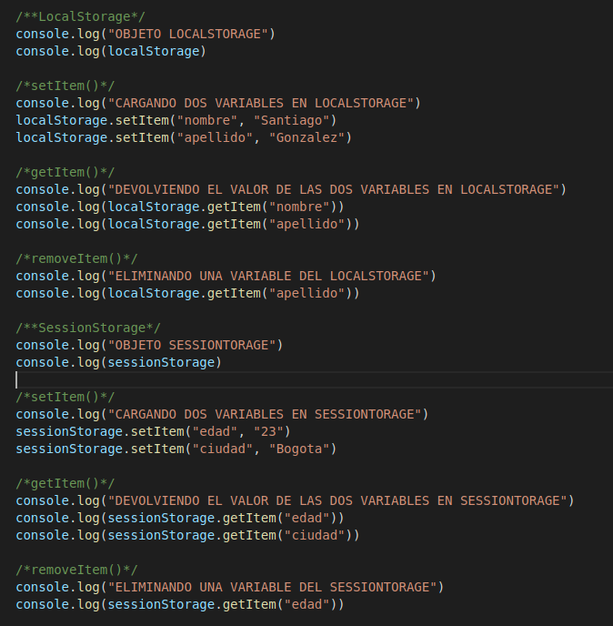

Lección 9 - LocalStorage y SessionStorage
Definición: SessionStorage es la información que se almacena en la session, cuando actualizamos la pagina o cerramos la pestaña
la informacion se perdio para siempre. A diferencia de este el LocalStorage, almacena la información en el almacenamiento local y si cerramos
la pestaña o actualizamos la pagina, la información va a seguir estando.
Metodos
-
setItem("nombre variable", "valor") Crea una nueva variable con su valor en el LocalStorage o SessionStorage, dependiendo de lo que
se escoga.
-
getItem("nombre variable") Devuelve el valor de variable en LocalStorage o SessionStorage.
-
removeItem("nombre variable") Elimina una variable del LocalStorage o SessionStorage
-
clear() Remueve todas las variables de LocalStorage o SessionStorage
Codigo
